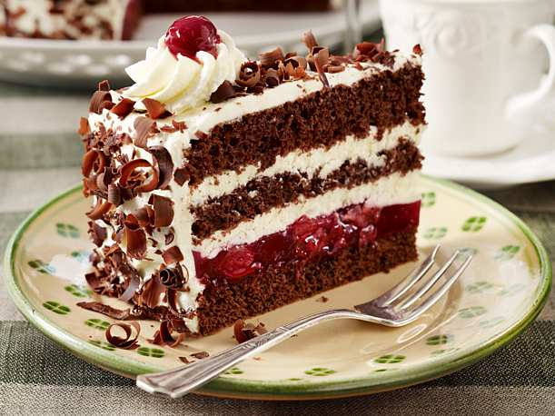

Receita de bolo floresta negra
Ingredientes
- 4 ovos
- 1 gema de ovo
- 50g de farinha
- 120g de açúcar granulado
- 50g de fécula de batata
- 20g de cacau em pó
Para o xarope de cereja
- 150ml de água
- 200g de açúcar
- 30ml de licor de cereja
Para o chantilly
- 50 ml de creme de leite fresco
- 50g de açúcar de confeiteiro
- 1 colher de chá de essência de baunilha
Cerejas
- 350g de cereja maceradas no licor de cereja
Para a cobertura de chocolate
- 350g de chocolate ao leite
Modo de preparo
- Numa tigela, misture a farinha de trigo, fécula de batata e cacau em pó. Peneire os ingredientes para remover quaisquer grumos. Este processo permitirá que os ingredientes sejam incorporados mais rapidamente.
- Adicione os ovos e o açúcar numa tigela e misture como se estivesse fazendo uma omelete. Em seguida, coloque a tigela sobre uma panela de água quente. A água não pode ferver, pois os ovos coagularão.
- Bata com uma batedeira manual em banho-maria, até formar uma espuma clara e volumosa. Este método chama-se pâte à bombe
- Retire do banho-maria e continue a bater até o resfriamento da mistura. A espuma de ovos estará com a consistência correta quando formar o ponto de fita.
- Adicione os ingredientes secos delicadamente com uma espátula, como se estivesse desenhando o número 8. Desta forma, o ar se manterá na massa.
- Coloque o bolo no forno numa forma pré untada, com farinha e manteiga, e asse por 40 minutos. O tempo de cozimento pode variar um pouco, devido ao tipo de forno utilizado. Quando o topo do bolo estiver dourado.
- Xarope de cereja: Numa panela, ferva a água com açúcar. Após o resfriamento, adicione o licor de cereja. Reserve.
- Corte a massa do bolo em três partes iguais, utilizando uma faca de pão grande. Em seguida, embeber a massa do bolo com o xarope de cereja para dar-lhe uma textura macia e aromatizar.
- Chantilly: Numa vasilha, coloque o creme de leite fresco e bata até ficar espumoso. Adicione o açúcar e a baunilha.
- Em seguida, coloque a tigela do creme de leite sobre uma tigela com gelo para manter a temperatura baixa durante a aeração do creme.
- Coloque as cerejas maceradas sobre a primeira camada de bolo e cubra com chantilly.
- Com uma espátula de bolo ou colher, coloque uma segunda camada de bolo e chantilly sobre a massa embebida do xarope.
- Coloque a parte superior do bolo sobre o recheio de chantilly e cerejas. Em seguida, cubra o bolo com o restante do chantilly.
- Decore com as raspas de chocolate e cerejas maceradas.
- Prontinho! Agora você pode degustar o seu bolo floresta negra.
